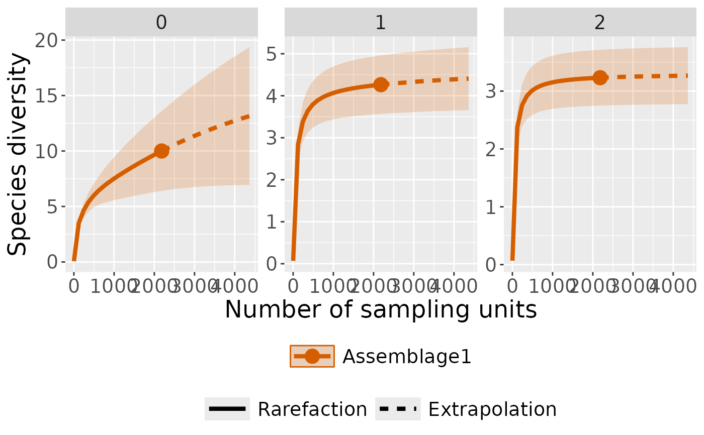

plot sample-size-based and coverage-based rarefaction/extrapolation curves along with a bridging sample completeness curve
Usage
ct_plot_inext(
inext_object,
type = 1,
se = TRUE,
facet_var = "None",
color_var = "Assemblage",
grey = FALSE
)Arguments
- inext_object
an object as outputed by
ct_inext()- type
three types of plots:
type = 1: sample-size-based rarefaction/extrapolation curvetype = 2: sample completeness curvetype = 3: coverage-based rarefaction/extrapolation curve
- se
a logical variable to display confidence interval around the estimated sampling curve.
- facet_var
create a separate plot for each value of a specified variable:
facet_var = "None": no separationfacet_var = "Order.q": a separate plot for each diversity orderfacet_var = "Assemblage": a separate plot for each assemblagefacet_var = "Both": a separate plot for each combination of order x assemblage
- color_var
create curves in different colors for values of a specified variable:
color_var = "None": all curves are in the same colorcolor_var = "Order.q": use different colors for diversity orderscolor_var = "Assemblage": use different colors for sitescolor_var = "Both": use different colors for combinations of order x assemblage
- grey
a logical variable to display grey and white ggplot2 theme
Examples
if (requireNamespace("iNEXT", quietly = TRUE)) {
## Import example data
camdata1 <- read.csv(ct:::table_files()[1]) %>%
dplyr::mutate(site = "pene") %>%
# remove consecutive entry of the same species at the same location within 60s
ct_independence(species_column = species,
site_column = camera,
datetime = datetimes,
threshold = 60, format = "%Y-%m-%d %H:%M:%S"
)
head(camdata1)
# Prepare sampling data (camera-day)
camday <- ct_camera_day(
data = camdata1,
deployment_column = camera,
datetime_column = datetime,
species_column = species,
size_column = number
)
# RAREFACTION/EXTRAPOLATION
int_ext <- ct_inext(data = camday,
diversity_order = c(0, 1, 2),
species_column = species,
site_column = sampling_unit,
size_column = number,
n_bootstrap = 50)
int_ext
# plot with curves colored by order
ct_plot_inext(int_ext, type = 1, color_var = "Order.q")
# plot with curves faceted by order
ct_plot_inext(int_ext, type = 1, facet_var = "Order.q")
}
#> Warning: invalid color.var setting, the iNEXT object do not consist multiple assemblages, change setting as Order.q
